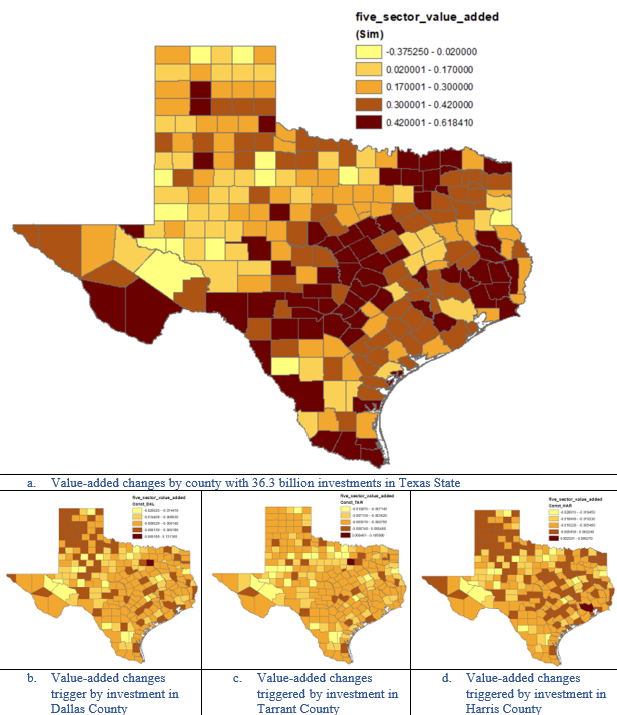
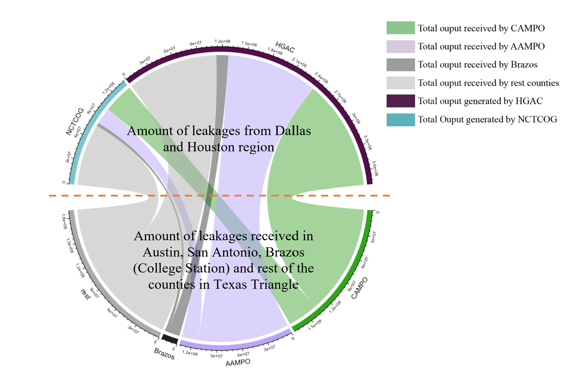

All Projects
2023

Distributive economic impacts of the Bipartisan Infrastructure Law: a case study of Texas applying CGE model
Ziqi Liu, and Ming Zhang
2023 WRSA Conference
[Slides]
2022

Transit Network Effects and the Multi-level Access Premiums
Ziqi Liu, Yang Li, and Ming Zhang
Cities
[Paper]
Can Rural Counties Benefit from High-Speed Rail Investments? Case Study of the Dallas-Houston Bullet Train Line
Ziqi Liu, Ming Zhang
2019 ACSP Conference
[Slides]
2021

Benchmark of the Trends of Spatial Inequality in the World Megaregions
Ziqi Liu, Ming Zhang, Liwen Liu
Sustainability
[Paper]
2018
2017
Mapping Human Mobility Using Social Media Data
Zhenlong Li, Ziqi Liu, Chunzhu Wei, Weixing Zhang, Tianqi Zou
UIUC CyberGIS Summer School Project
[Poster]